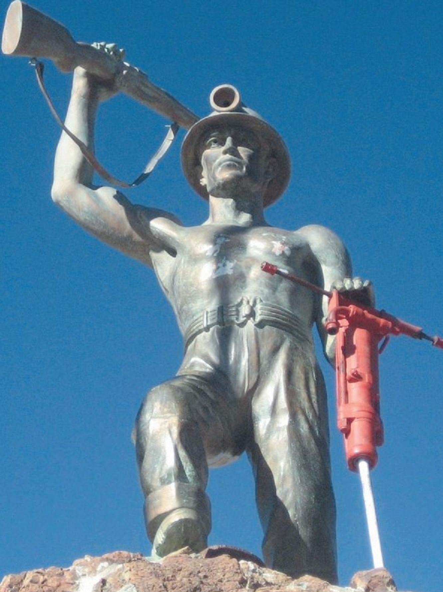
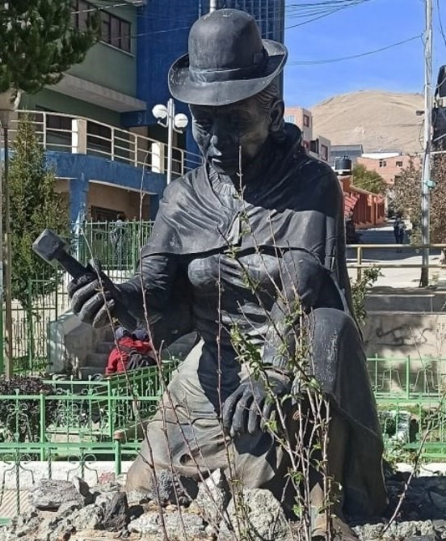
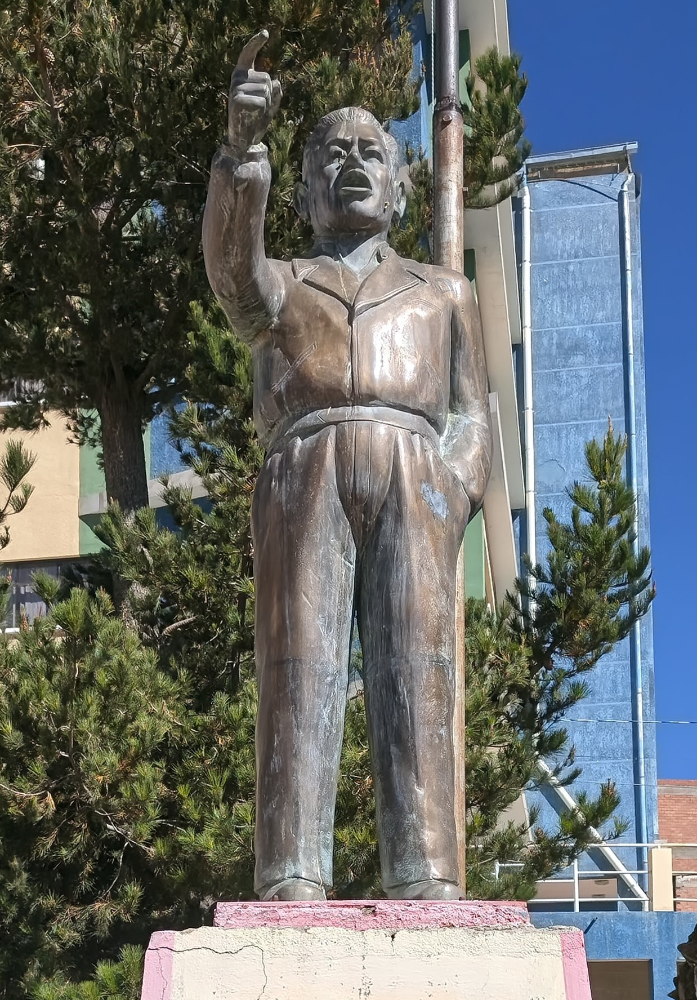
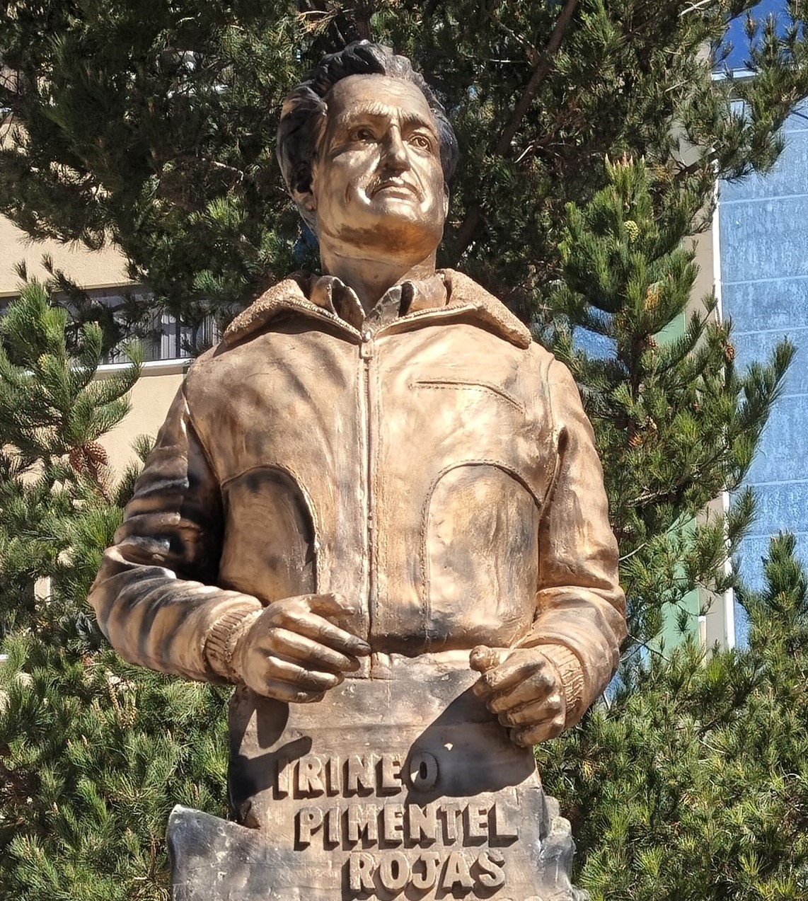
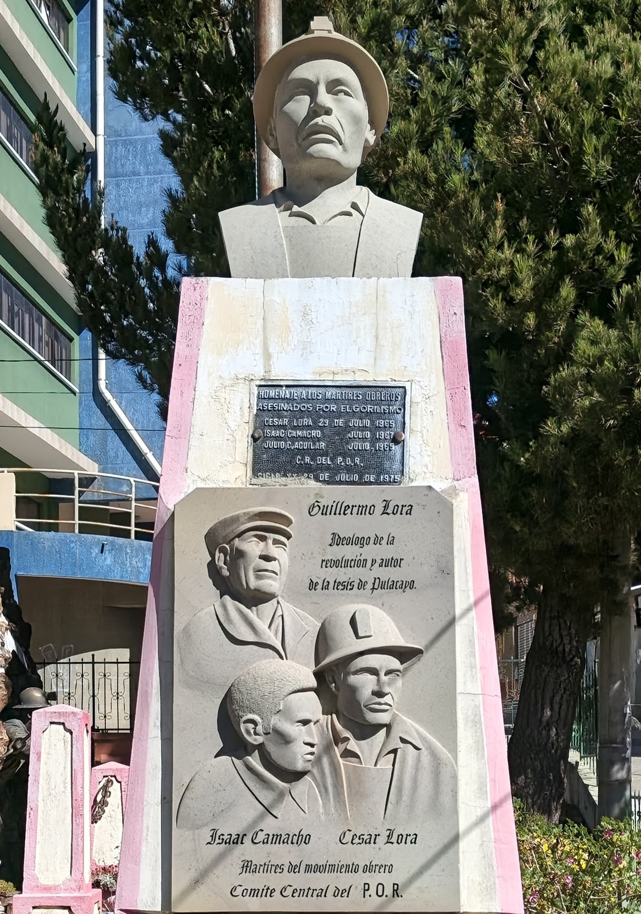

InteractivoMonumento al Minero
Historia: Levantado en honor a la incansable lucha de los trabajadores del subsuelo de Llallagua y Siglo XX, protagonistas de las mayores gestas sindicales del país.
Significado: Representa la fuerza, el valor, el pilar económico de la nación y la resistencia del pueblo minero ante la opresión.

InteractivoMonumento a las Palliris
Historia: Erigida en la comunidad minera de Siglo XX, Potosí, para visibilizar el trabajo histórico de las mujeres en los centros de explotación estañífera.
Significado: Rinde homenaje a las palliris, mujeres que seleccionan minerales de los desmontes de forma artesanal, simbolizando su resistencia, esfuerzo y sacrificio en la minería boliviana.

InteractivoFederico Escobar Zapata
Historia: Histórico líder sindical minero de Bolivia, trabajador del Campamento Siglo XX en la mina Catavi, quien dedicó su vida a la defensa de los derechos laborales.
Significado: Ocupó el cargo de Control Obrero y fundó el Partido Comunista Marxista Leninista. Su efigie rinde homenaje a la lucha inquebrantable y la resistencia del proletariado minero.

InteractivoMonumento a Irineo Pimentel
Historia: Erigido en honor a Irineo Pimentel Rojas, destacado líder sindical, periodista y defensor de los derechos de los trabajadores mineros durante el siglo XX en el distrito de Llallagua.
Significado: Simboliza la lucha social, la libertad de expresión y la resistencia intelectual del movimiento obrero frente a las políticas de opresión en los campamentos mineros.

InteractivoCésar Lora, Guillermo Lora e Isaac Camacho
Historia: Erigido en homenaje a tres figuras fundamentales del movimiento obrero minero de Llallagua y Siglo XX: César Lora, Guillermo Lora e Isaac Camacho.
Significado: El pedestal unificado simboliza la unidad ideológica, la resistencia obrera y la lucha inclaudicable contra las dictaduras y la explotación minera.